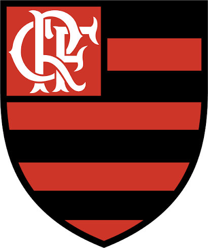
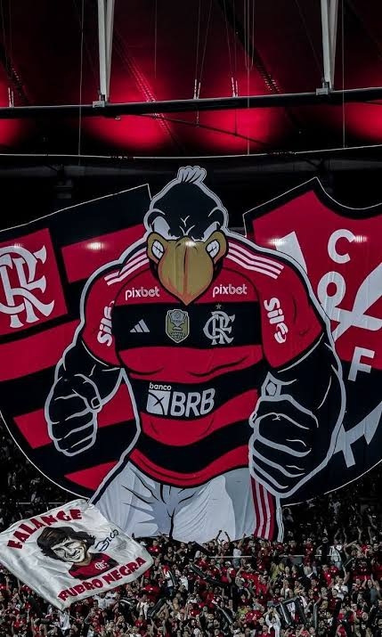

Fundação: 17 de novembro de 1895
Fundado inicialmente para disputas de remo na Baía de Guanabara, o Clube de Regatas do Flamengo adotou o futebol alguns anos depois e construiu um império. Hoje, dono absoluto da maior torcida do Brasil, o "Mais Querido" move milhões de apaixonados em todo o território nacional.
A Era de Ouro do clube ocorreu na década de 1980. Sob a regência do eterno camisa 10 Zico, ao lado de astros como Júnior e Adílio, o Flamengo varreu a América e o Mundo, sagrando-se Campeão Mundial Interclubes em 1981 ao destruir o Liverpool. O clube viveu um renascimento mágico em 2019 com a Geração de Gabigol e Bruno Henrique, vencendo a Libertadores e o Brasileirão em um mesmo fim de semana épico.